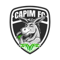
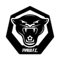
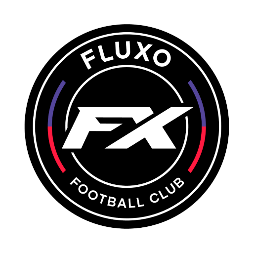
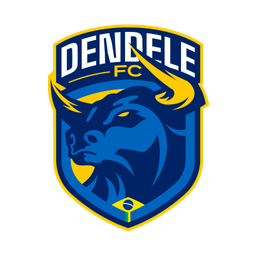
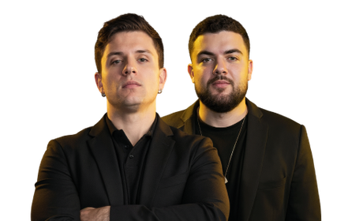
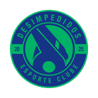
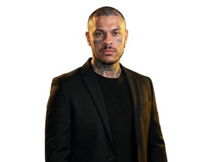
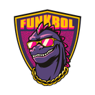
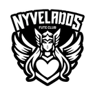
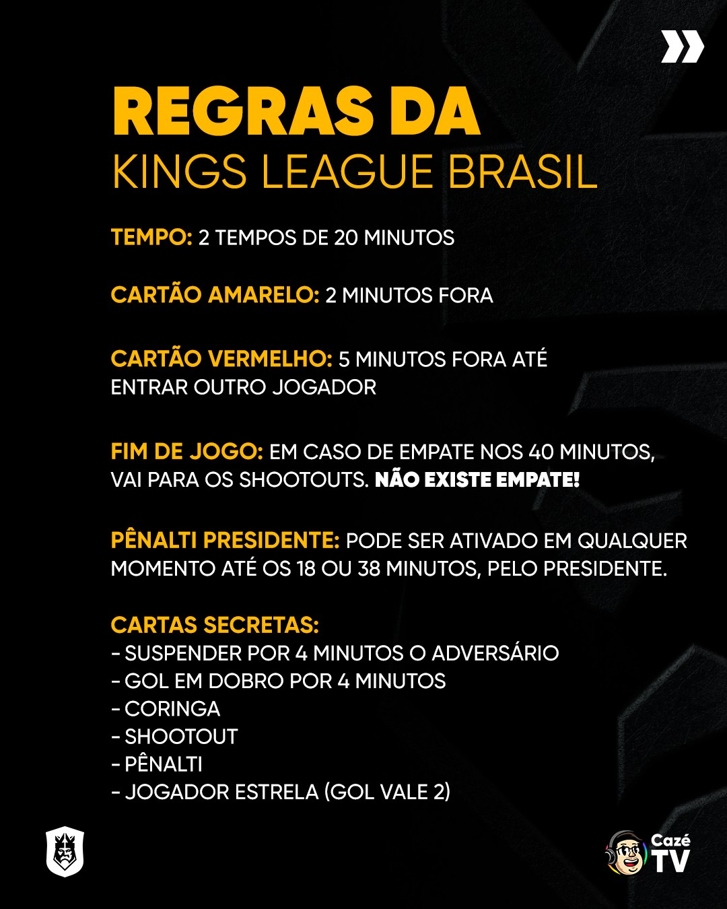

Futebol, entretenimento e tecnologia em um novo formato
🏆 O que é a Kings League Brasil?
A Kings League Brasil é a versão nacional da liga criada por Gerard Piqué,
que mistura futebol, entretenimento e cultura digital.
Com início em 2025, a competição traz um novo formato de futebol 7x7
com regras inovadoras e participação de influenciadores, ex-jogadores e streamers.
KINGSCUP-
KINGSCUP-
KINGSCUP-
KINGSCUP-
KINGSCUP-
KINGSCUP-
KINGSCUP-
KINGSCUP-
KINGSCUP-
KINGSCUP-
KINGSCUP-
KINGSCUP
Times e Presidentes

CAPIM FC
Jonvlogs + Luva de Pedreiro
LOUD SC
Coringa + renato vicente

FURIA FC
NeymarJr + Cris guedes

FLUXO FC
Cerol + Nobru


DENDELE FC
Paulinho o Loko + Luqueta


DESIMPEDIDOS EC
Toguro
FC REAL ELITE
whindersson Nunes + ludmilla + Lucas Freestyle

FUNKBOL CLUBE
Kond + Michel Elias + MC Hariel
G3X FC
Gaules + Kelvin

NYVELADOS FC
Nyvi Estephan
Regras Inovadoras
Campo reduzido – partidas 7x7 com dois tempos de 20 minutos.
Sem empates: decisões por pênaltis em movimento.
Cartas especiais que alteram o jogo (gol duplo, expulsão, pênalti etc.).
VAR aberto e transparente para o público.
Jogador Estrela: um atleta profissional convidado por partida.

Jogadores e Draft
Os jogadores são escolhidos por um sistema de draft,
permitindo a participação de atletas amadores e semiprofissionais.
Cada time conta com 12 jogadores, e um deles pode ser o “jogador estrela” –
um convidado especial, como ex-jogadores profissionais.
Impacto Digital
A Kings League Brasil é um fenômeno nas redes sociais.
Os jogos são transmitidos ao vivo nas plataformas de streaming e contam com votações interativas,
memes, entrevistas e bastidores, tornando o público parte ativa da experiência.
Curiosidades
O Brasil venceu a Kings League World Cup Nations 2025.
A final reuniu mais de 1 milhão de espectadores online.
O torneio combina futebol, streaming e eSports.
Há planos de sediar a próxima Copa Mundial em São Paulo, em 2026.